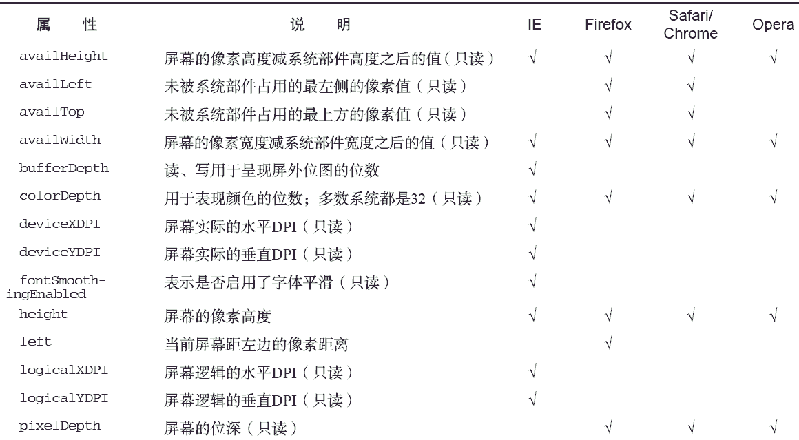
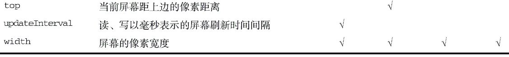

JavaScript 中有几个对象在编程中用处不大，而screen 对象就是其中之一。screen 对象基本上只用来表明客户端的能力，其中包括浏览器窗口外部的显示器的信息，如像素宽度和高度等。每个浏览器中的screen 对象都包含着各不相同的属性，下表列出了所有属性及支持相应属性的浏览器。


这些信息经常集中出现在测定客户端能力的站点跟踪工具中，但通常不会用于影响功能。不过，有时候也可能会用到其中的信息来调整浏览器窗口大小，使其占据屏幕的可用空间，例如：
window.resizeTo(screen.availWidth, screen.availHeight);
前面曾经提到过，许多浏览器都会禁用调整浏览器窗口大小的能力，因此上面这行代码不一定在所有环境下都有效。
涉及移动设备的屏幕大小时，情况有点不一样。运行iOS 的设备始终会像是把设备竖着拿在手里一样，因此返回的值是768×1024。而Android 设备则会相应调用screen.width 和screen.height 的值。